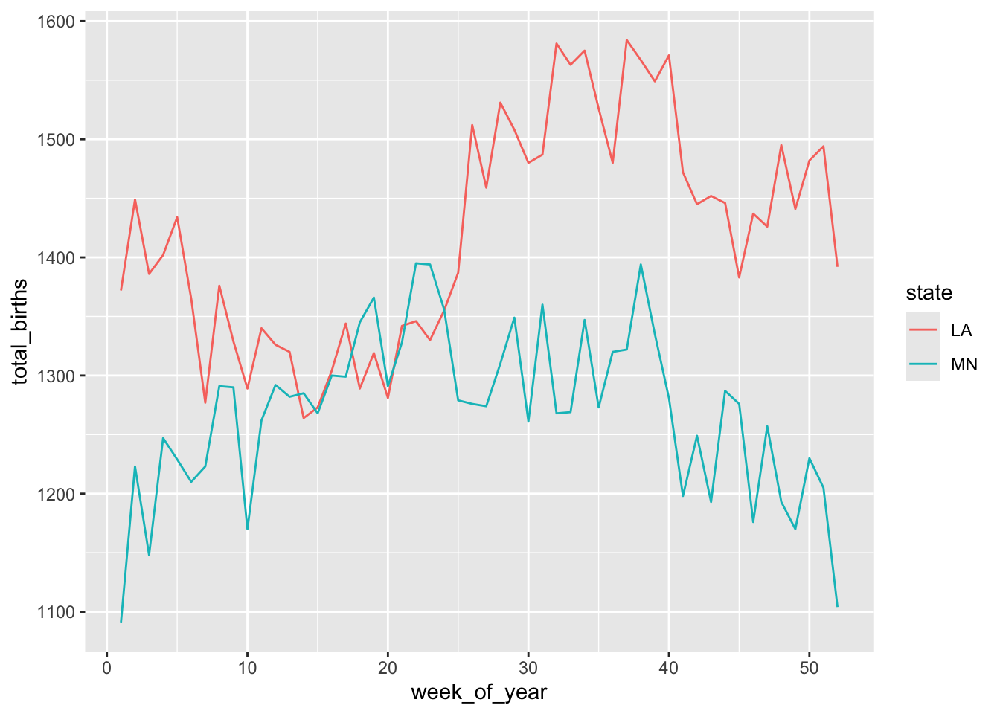

Below is the visual representation of the data science process we saw earlier. Which stage are we in currently?
Recall that wrangling is important. It is much of what we spend our efforts on in Data Science. There are lots of steps, hence R functions, that can go into data wrangling. But we can get far with the following 6 wrangling verbs:
verb
action
arrange
arrange the rows according to some column
filter
filter out or obtain a subset of the rows
select
select a subset of columns
mutate
mutate or create a column
summarize
calculate a numerical summary of a column
group_by
group the rows by a specified column
Example 1: Single Verb
Let’s start by working with some TidyTuesday data on penguins. This data includes information about penguins’ flippers (“arms”) and bills (“mouths” or “beaks”). Let’s import this using read_csv(), a function in the tidyverse package. For the most part, this is similar to read.csv(), though read_csv() can be more efficient at importing large datasets.
library(tidyverse)penguins <-read_csv('https://raw.githubusercontent.com/rfordatascience/tidytuesday/master/data/2020/2020-07-28/penguins.csv')# Check it outhead(penguins)
# A tibble: 6 × 8
species island bill_length_mm bill_depth_mm flipper_length_mm body_mass_g
<chr> <chr> <dbl> <dbl> <dbl> <dbl>
1 Adelie Torgersen 39.1 18.7 181 3750
2 Adelie Torgersen 39.5 17.4 186 3800
3 Adelie Torgersen 40.3 18 195 3250
4 Adelie Torgersen NA NA NA NA
5 Adelie Torgersen 36.7 19.3 193 3450
6 Adelie Torgersen 39.3 20.6 190 3650
# ℹ 2 more variables: sex <chr>, year <dbl>
Check Understanding
Construct a plot that allows us to examine how the relationship between body mass and bill length varies by species and sex.
ggplot(penguins,aes(x = bill_length_mm, y = body_mass_g, color = species)) +geom_point() +facet_wrap(~sex)
Check Understanding
Use the 6 wrangling verbs to address each task in the code chunk below. You can tack on |> head() to print out just 6 rows to keep your rendered document manageable. Most of these require just 1 verb.
# Get data on only Adelie penguins that weigh more than 4700gpenguins |>filter(species =="Adelie", body_mass_g >4700)
# A tibble: 2 × 8
species island bill_length_mm bill_depth_mm flipper_length_mm body_mass_g
<chr> <chr> <dbl> <dbl> <dbl> <dbl>
1 Adelie Biscoe 41 20 203 4725
2 Adelie Biscoe 43.2 19 197 4775
# ℹ 2 more variables: sex <chr>, year <dbl>
# Get data on penguin body mass only# Show just the first 6 rowspenguins |>select(body_mass_g) |>head()
# A tibble: 6 × 1
body_mass_g
<dbl>
1 3750
2 3800
3 3250
4 NA
5 3450
6 3650
# Sort the penguins from smallest to largest body mass# Show just the first 6 rowspenguins |>arrange((body_mass_g)) |>head()
# Calculate the average body mass across all penguins# Note: na.rm = TRUE removes the NAs from the calculationpenguins |>summarize(mean =mean(body_mass_g, na.rm =TRUE))
# A tibble: 1 × 1
mean
<dbl>
1 4202.
# Calculate the average body mass by speciespenguins |>group_by(species) |>summarize(average =mean(body_mass_g, na.rm =TRUE))
# A tibble: 3 × 2
species average
<chr> <dbl>
1 Adelie 3701.
2 Chinstrap 3733.
3 Gentoo 5076.
# Create a new column that records body mass in kilograms, not grams# NOTE: there are 1000 g in 1 kg# Show just the first 6 rowspenguins |>mutate(body_mass_kg = body_mass_g/1000) |>head()
# A tibble: 6 × 9
species island bill_length_mm bill_depth_mm flipper_length_mm body_mass_g
<chr> <chr> <dbl> <dbl> <dbl> <dbl>
1 Adelie Torgersen 39.1 18.7 181 3750
2 Adelie Torgersen 39.5 17.4 186 3800
3 Adelie Torgersen 40.3 18 195 3250
4 Adelie Torgersen NA NA NA NA
5 Adelie Torgersen 36.7 19.3 193 3450
6 Adelie Torgersen 39.3 20.6 190 3650
# ℹ 3 more variables: sex <chr>, year <dbl>, body_mass_kg <dbl>
Check Understanding
How many penguins of each species do we have? Create a viz that addresses this question.
ggplot(penguins, aes(x = species)) +geom_bar()
Check Understanding
Can we use the 6 verbs to calculate exactly how many penguins in each species?
HINT: n() calculates group size.
penguins |>group_by(species) |>summarize(n())
# A tibble: 3 × 2
species `n()`
<chr> <int>
1 Adelie 152
2 Chinstrap 68
3 Gentoo 124
count verb
The count() verb provides a handy shortcut!
penguins |>count(species)
# A tibble: 3 × 2
species n
<chr> <int>
1 Adelie 152
2 Chinstrap 68
3 Gentoo 124
Example 2: Multiple Verbs
Check Understanding
Let’s practice combining some verbs. For each task:
Translate the prompt into our 6 verbs. That is, think before you type.
Build your code line by line. It’s important to understand what’s being piped into each function!
Ask what you can rearrange and still get the same result.
Read your final code like a paragraph / a conversation. Would another person be able to follow your logic?
filter the Gentoo specie
mutate bill length from mm to cm
arrange the column
# Sort Gentoo penguins from biggest to smallest with respect to their # bill length in cm (there are 10 mm in a cm)penguins |>filter(species =="Gentoo") |>mutate(bill_length_cm = bill_length_mm/10) |>arrange(bill_length_cm)
# Sort the species from smallest to biggest with respect to their # average bill length in cmpenguins |>mutate(bill_length_cm = bill_length_mm/10) |>group_by(species) |>summarize(mean_bill_length =mean(bill_length_cm, na.rm =TRUE)) |>arrange(desc(mean_bill_length))
# A tibble: 3 × 2
species mean_bill_length
<chr> <dbl>
1 Chinstrap 4.88
2 Gentoo 4.75
3 Adelie 3.88
Example 3: Interpret Code
Let’s practice reading and making sense of somebody else’s code. What do you think this produces?
How many columns? Rows? 9 columns, 2 rows
What are the column names?
What’s represented in each row?
Once you’ve thought about it, put the code inside a chunk and run it!
penguins |> filter(species == “Chinstrap”) |> group_by(sex) |> summarize(min = min(body_mass_g), max = max(body_mass_g)) |> mutate(range = max - min)
18.2 Exercises Part 1: Same Verbs, New Tricks
Exercise 1: More Filtering
Recall the “logical comparison operators” we can use to filter() our data:
symbol
meaning
==
equal to
!=
not equal to
>
greater than
>=
greater than or equal to
<
less than
<=
less than or equal to
%in% c(***, ***)
a list of multiple values
Part a
Commenting/Uncommenting Code
To comment/uncomment several lines of code at once, highlight them then click ctrl/cmd+shift+c.
# Create a dataset with just Adelie and Chinstrap using %in%# Pipe this into `count(species)` to confirm that you only have these 2 speciespenguins |>filter(species%in%c("Adelie", "Chinstrap")) |>count(species)
# A tibble: 2 × 2
species n
<chr> <int>
1 Adelie 152
2 Chinstrap 68
# Create a dataset with just Adelie and Chinstrap using !=# Pipe this into `count(species)` to confirm that you only have these 2 speciespenguins |>filter(species !="Gentoo") |>count(species)
# A tibble: 2 × 2
species n
<chr> <int>
1 Adelie 152
2 Chinstrap 68
Part b
Notice that some of our penguins have missing (NA) data on some values:
head(penguins)
# A tibble: 6 × 8
species island bill_length_mm bill_depth_mm flipper_length_mm body_mass_g
<chr> <chr> <dbl> <dbl> <dbl> <dbl>
1 Adelie Torgersen 39.1 18.7 181 3750
2 Adelie Torgersen 39.5 17.4 186 3800
3 Adelie Torgersen 40.3 18 195 3250
4 Adelie Torgersen NA NA NA NA
5 Adelie Torgersen 36.7 19.3 193 3450
6 Adelie Torgersen 39.3 20.6 190 3650
# ℹ 2 more variables: sex <chr>, year <dbl>
Handeling NA Values
There are many ways to handle missing data. The right approach depends upon your research goals. A general rule is: Only get rid of observations with missing data if they’re missing data on variables you need for the specific task at hand!
Example 1
Suppose our research focus is just on body_mass_g. Two penguins are missing this info:
# NOTE the use of is.na()penguins |>summarize(sum(is.na(body_mass_g)))
# A tibble: 1 × 1
`sum(is.na(body_mass_g))`
<int>
1 2
Let’s define a new dataset that removes these penguins:
# NOTE the use of is.na()penguins_w_body_mass <- penguins |>filter(!is.na(body_mass_g))# Compare the number of penguins in this vs the original datanrow(penguins_w_body_mass)
[1] 342
nrow(penguins)
[1] 344
Note that some penguins in penguins_w_body_mass are missing info on sex, but we don’t care since that’s not related to our research question:
penguins_w_body_mass |>summarize(sum(is.na(sex)))
# A tibble: 1 × 1
`sum(is.na(sex))`
<int>
1 9
Example 2
In the very rare case that we need complete information on every variable for the specific task at hand, we can use na.omit() to get rid of any penguin that’s missing info on any variable:
penguins_complete <- penguins |>na.omit()
How many penguins did this eliminate?
nrow(penguins_complete)
[1] 333
nrow(penguins)
[1] 344
Part c
Explain why we should only use na.omit() in extreme circumstances.
Because we could use important information and/or observations because it is missing on variable but not the others. We should only do this in case we need all the variables for our research. If not the research could be misleading or bias and do not reflect the reality.
Exercise 2: More Selecting
Being able to select() only certain columns can help simplify our data. This is especially important when we’re working with lots of columns (which we haven’t done yet). It can also get tedious to type out every column of interest. Here are some shortcuts:
-removes a given variable and keeps all others (e.g. select(-island))
starts_with("___"), ends_with("___"), or contains("___") selects only the columns that either start with, end with, or simply contain the given string of characters
Use these shortcuts to create the following datasets.
Exercise 3: Arranging, Counting, & Grouping by Multiple Variables
We’ve done examples where we need to filter() by more than one variable, or select() more than one variable. Use your intuition for how we can arrange(), count(), and group_by() more than one variable.
# Change this code to sort the penguins by species, and then island name# NOTE: The first row should be an Adelie penguin living on Biscoe islandpenguins |>arrange(species, island)
# Change this code to count the number of male/female penguins observed for each speciespenguins |>count(species, sex)
# A tibble: 8 × 3
species sex n
<chr> <chr> <int>
1 Adelie female 73
2 Adelie male 73
3 Adelie <NA> 6
4 Chinstrap female 34
5 Chinstrap male 34
6 Gentoo female 58
7 Gentoo male 61
8 Gentoo <NA> 5
# Change this code to calculate the average body mass by species and sexpenguins |>group_by(species, sex) |>summarize(mean =mean(body_mass_g, na.rm =TRUE))
# A tibble: 8 × 3
# Groups: species [3]
species sex mean
<chr> <chr> <dbl>
1 Adelie female 3369.
2 Adelie male 4043.
3 Adelie <NA> 3540
4 Chinstrap female 3527.
5 Chinstrap male 3939.
6 Gentoo female 4680.
7 Gentoo male 5485.
8 Gentoo <NA> 4588.
Exercise 4: Dates
Before some wrangling practice, let’s explore another important concept: working with or mutating date variables. Dates are a whole special object type or class in R that automatically respect the order of time.
# Get today's dateas.Date(today())
[1] "2025-03-28"
# Let's store this as "today" so we can work with it belowtoday <-as.Date(today())# Check out the class of this objectclass(today)
[1] "Date"
The lubridate package inside tidyverse contains functions that can extract various information from dates. Let’s learn about some of the most common functions by applying them to today. For each, make a comment on what the function does
year(today)
[1] 2025
# These lines gives you the month, the first by number and the second by name because includes label = TRUEmonth(today)
[1] 3
month(today, label =TRUE)
[1] Mar
12 Levels: Jan < Feb < Mar < Apr < May < Jun < Jul < Aug < Sep < ... < Dec
# The number of the week of the year out of 52week(today)
[1] 13
# The first line is the number day of the month # The second line is the number day of the whole year, out of 365mday(today)
[1] 28
yday(today) # This is often called the "Julian day"
[1] 87
# The first line is the day of the week in numbers# The second line is the day of the week by name.wday(today)
[1] 6
wday(today, label =TRUE)
[1] Fri
Levels: Sun < Mon < Tue < Wed < Thu < Fri < Sat
# In the first row, today is a day higher than the date# In the second row, today is lower than the datetoday >=ymd("2024-02-14")
[1] TRUE
today <ymd("2024-02-14")
[1] FALSE
18.3 Exercises Part 2: Application
The remaining exercises are similar to some of those on the homework. Hence, the solutions are not provided. Let’s apply these ideas to the daily Birthdays dataset in the mosaic package.
library(mosaic)data("Birthdays")head(Birthdays)
state year month day date wday births
1 AK 1969 1 1 1969-01-01 Wed 14
2 AL 1969 1 1 1969-01-01 Wed 174
3 AR 1969 1 1 1969-01-01 Wed 78
4 AZ 1969 1 1 1969-01-01 Wed 84
5 CA 1969 1 1 1969-01-01 Wed 824
6 CO 1969 1 1 1969-01-01 Wed 100
Birthdays gives the number of births recorded on each day of the year in each state from 1969 to 19881. We can use our wrangling skills to understand some drivers of daily births. Putting these all together can be challenging! Remember the following ways to make tasks more manageable:
Translate the prompt into our 6 verbs (and count()). That is, think before you type.
Build your code line by line. It’s important to understand what’s being piped into each function!
Exercise 5: Warming up
# How many days of data do we have for each state?# How many total births were there in this time period?Birthdays |>summarise(sum(births))
sum(births)
1 70486538
# How many total births were there per state in this time period, sorted from low to high?Birthdays |>group_by(state) |>summarise(total_births =sum(births)) |>arrange(total_births)
# A tibble: 51 × 2
state total_births
<chr> <int>
1 VT 147886
2 WY 154019
3 AK 185385
4 DE 188705
5 SD 235734
6 ND 238696
7 NV 241470
8 MT 253884
9 NH 264984
10 RI 265038
# ℹ 41 more rows
Exercise 6: Homework Reprise
Create a new dataset named daily_births that includes the total number of births per day (across all states) and the corresponding day of the week, eg, Mon. NOTE: Name the column with total births so that it’s easier to wrangle and plot.
Using this data, construct a plot of births over time, indicating the day of week.
Exercise 7: Wrangle & Plot
For each prompt below, you can decide whether you want to: (1) wrangle and store data, then plot; or (2) wrangle data and pipe directly into ggplot. For example:
penguins |>filter(species !="Gentoo") |>ggplot(aes(y = bill_length_mm, x = bill_depth_mm, color = species)) +geom_point()
Part a
Calculate the total number of births in each month and year, eg, Jan 1969, Feb 1969, …. Label month by names not numbers, eg, Jan not 1. Then, plot the births by month and comment on what you learn.
In 1988, calculate the total number of births per week in each state. Get rid of week “53”, which isn’t a complete week! Then, make a line plot of births by week for each state and comment on what you learn. For example, do you notice any seasonal trends? Are these the same in every state? Any outliers?
Repeat the above for just Minnesota (MN) and Louisiana (LA). MN has one of the coldest climates and LA has one of the warmest. How do their seasonal trends compare? Do you think these trends are similar in other colder and warmer states? Try it!
MN_LA_births <- Birthdays |>filter(year ==1988, state %in%c("MN", "LA")) |>mutate(week_of_year =week(date)) |>filter(week_of_year !=53) |>group_by(state, week_of_year) |>summarise(total_births =sum(births))ggplot(MN_LA_births, aes(x = week_of_year, y = total_births, color = state)) +geom_line()

Exercise 8: More Practice
18.3.0.1 Part a
Create a dataset with only births in Massachusetts (MA) in 1979 and sort the days from those with the most births to those with the fewest.
MA_1979_Births <- Birthdays |>filter(year ==1979, state =="MA") |>arrange(desc(births))head(MA_1979_Births)
state year month day date wday births
1 MA 1979 9 28 1979-09-28 Fri 262
2 MA 1979 9 11 1979-09-11 Tues 252
3 MA 1979 12 28 1979-12-28 Fri 249
4 MA 1979 9 26 1979-09-26 Wed 246
5 MA 1979 7 24 1979-07-24 Tues 245
6 MA 1979 4 27 1979-04-27 Fri 243
Part b
Make a table showing the five states with the most births between September 9, 1979 and September 12, 1979, including the 9th and 12th. Arrange the table in descending order of births.
The fivethirtyeight package has more recent data.↩︎
Source Code
---title: "Dates"number-sections: trueexecute: warning: falsefig-env: 'figure'fig-pos: 'h'fig-align: centercode-fold: false---::: {.callout-caution title="Learning Goals"}- Review wrangling verbs `select`, `mutate`, `filter`, `arrange`, `summarize`, `group_by`- Form conceptual understanding of code without running it- Practice using wrangling verbs in different way- Practice dealing with dates using `lubridate` functions:::::: {.callout-note title="Additional Resources"}For more information about the topics covered in this chapter, refer to the resources below:- [Date and Times (html)](https://r4ds.hadley.nz/datetimes) by Wickham, Çetinkaya-Rundel, & Grolemund :::## Warm-up### Data Science Process {-}Below is the visual representation of the data science process we saw earlier. Which stage are we in currently? Recall that wrangling is important. It is much of what we spend our efforts on in Data Science. There are lots of steps, hence R functions, that can go into data wrangling. But we can get far with the following 6 *wrangling verbs*:| verb | action ||:------------|:--------------------------------------------------|| `arrange` | **arrange** the *rows* according to some *column* || `filter` | **filter** out or obtain a subset of the *rows* || `select` | **select** a subset of *columns* || `mutate` | **mutate** or create a *column* || `summarize` | calculate a numerical **summary** of a *column* || `group_by` | **group** the *rows* by a specified *column* |### Example 1: Single Verb {-}Let's start by working with some TidyTuesday data on penguins. This data includes information about penguins' flippers ("arms") and bills ("mouths" or "beaks"). Let's import this using `read_csv()`, a function in the `tidyverse` package. For the most part, this is similar to `read.csv()`, though `read_csv()` can be more efficient at importing large datasets.```{r}library(tidyverse)penguins <-read_csv('https://raw.githubusercontent.com/rfordatascience/tidytuesday/master/data/2020/2020-07-28/penguins.csv')# Check it outhead(penguins)```::: {.callout-warning title="Check Understanding"}Construct a plot that allows us to examine how the relationship between body mass and bill length varies by species and sex.:::```{r}ggplot(penguins,aes(x = bill_length_mm, y = body_mass_g, color = species)) +geom_point() +facet_wrap(~sex)```::: {.callout-warning title="Check Understanding"}Use the 6 wrangling verbs to address each task in the code chunk below. You can tack on `|> head()` to print out just 6 rows to keep your rendered document manageable. Most of these require just 1 verb.:::```{r}# Get data on only Adelie penguins that weigh more than 4700gpenguins |>filter(species =="Adelie", body_mass_g >4700)# Get data on penguin body mass only# Show just the first 6 rowspenguins |>select(body_mass_g) |>head()# Sort the penguins from smallest to largest body mass# Show just the first 6 rowspenguins |>arrange((body_mass_g)) |>head()# Calculate the average body mass across all penguins# Note: na.rm = TRUE removes the NAs from the calculationpenguins |>summarize(mean =mean(body_mass_g, na.rm =TRUE))# Calculate the average body mass by speciespenguins |>group_by(species) |>summarize(average =mean(body_mass_g, na.rm =TRUE))# Create a new column that records body mass in kilograms, not grams# NOTE: there are 1000 g in 1 kg# Show just the first 6 rowspenguins |>mutate(body_mass_kg = body_mass_g/1000) |>head()```::: {.callout-warning title="Check Understanding"}How many penguins of each species do we have? Create a viz that addresses this question.:::```{r}ggplot(penguins, aes(x = species)) +geom_bar()```::: {.callout-warning title="Check Understanding"}Can we use the 6 verbs to calculate exactly how many penguins in each species? HINT: `n()` calculates group size.:::```{r}penguins |>group_by(species) |>summarize(n())```::: {.callout-tip title="`count` verb"}The `count()` verb provides a handy shortcut!```{r}penguins |>count(species)```:::### Example 2: Multiple Verbs {-}::: {.callout-warning title="Check Understanding"}Let's practice *combining* some verbs. For each task:- Translate the prompt into our 6 verbs. That is, think before you type.- Build your code line by line. It's important to understand what's being piped into each function!- Ask what you can rearrange and still get the same result.- Read your final code like a paragraph / a conversation. Would another person be able to follow your logic?:::- filter the Gentoo specie- mutate bill length from mm to cm - arrange the column```{r}# Sort Gentoo penguins from biggest to smallest with respect to their # bill length in cm (there are 10 mm in a cm)penguins |>filter(species =="Gentoo") |>mutate(bill_length_cm = bill_length_mm/10) |>arrange(bill_length_cm)```- Sort the species by groups- mutate bill length from mm to cm - Arrange descending bill length in cm ```{r}# Sort the species from smallest to biggest with respect to their # average bill length in cmpenguins |>mutate(bill_length_cm = bill_length_mm/10) |>group_by(species) |>summarize(mean_bill_length =mean(bill_length_cm, na.rm =TRUE)) |>arrange(desc(mean_bill_length))```### Example 3: Interpret Code {-}Let's practice reading and making sense of somebody *else*'s code. What do you think this produces?- How many columns? Rows? 9 columns, 2 rows - What are the column names?- What's represented in each row?Once you've thought about it, put the code inside a chunk and run it!penguins |\> filter(species == "Chinstrap") |\> group_by(sex) |\> summarize(min = min(body_mass_g), max = max(body_mass_g)) |\> mutate(range = max - min)\\\\## Exercises Part 1: Same Verbs, New Tricks### Exercise 1: More Filtering {.unnumbered}Recall the "logical comparison operators" we can use to `filter()` our data:| symbol | meaning ||:-----------------|:--------------------------|| `==` | equal to || `!=` | not equal to || `>` | greater than || `>=` | greater than or equal to || `<` | less than || `<=` | less than or equal to || `%in% c(***, ***)` | a list of multiple values |#### Part a {.unnumbered}::: {.callout-tip title="Commenting/Uncommenting Code"}To comment/uncomment several lines of code at once, highlight them then click <kbd>ctrl/cmd</kbd>+<kbd>shift</kbd>+<kbd>c</kbd>.:::```{r}# Create a dataset with just Adelie and Chinstrap using %in%# Pipe this into `count(species)` to confirm that you only have these 2 speciespenguins |>filter(species%in%c("Adelie", "Chinstrap")) |>count(species)``````{r}# Create a dataset with just Adelie and Chinstrap using !=# Pipe this into `count(species)` to confirm that you only have these 2 speciespenguins |>filter(species !="Gentoo") |>count(species)```#### Part b {.unnumbered}Notice that some of our penguins have missing (`NA`) data on some values:```{r}head(penguins)```::: {.callout-tip title="Handeling `NA` Values"}There are many ways to handle missing data. The right approach depends upon your research goals. A general rule is: Only get rid of observations with missing data if they're missing data on variables you *need* for the specific task at hand!:::**Example 1**Suppose our research focus is *just* on `body_mass_g`. Two penguins are missing this info:```{r}# NOTE the use of is.na()penguins |>summarize(sum(is.na(body_mass_g)))```Let's define a new dataset that removes these penguins:```{r}# NOTE the use of is.na()penguins_w_body_mass <- penguins |>filter(!is.na(body_mass_g))# Compare the number of penguins in this vs the original datanrow(penguins_w_body_mass)nrow(penguins)```Note that some penguins in `penguins_w_body_mass` are missing info on `sex`, but we don't care since that's not related to our research question:```{r}penguins_w_body_mass |>summarize(sum(is.na(sex)))```**Example 2**In the *very rare case* that we need complete information on every variable for the specific task at hand, we can use `na.omit()` to get rid of *any* penguin that's missing info on *any* variable:```{r}penguins_complete <- penguins |>na.omit()```How many penguins did this eliminate?```{r}nrow(penguins_complete)nrow(penguins)```#### Part c {.unnumbered}Explain why we should only use `na.omit()` in extreme circumstances.Because we could use important information and/or observations because it is missing on variable but not the others. We should only do this in case we need all the variables for our research. If not the research could be misleading or bias and do not reflect the reality. \\\\### Exercise 2: More Selecting {.unnumbered}Being able to `select()` only certain columns can help simplify our data. This is especially important when we're working with *lots* of columns (which we haven't done yet). It can also get tedious to type out every column of interest. Here are some shortcuts:- `-` *removes* a given variable and keeps all others (e.g. `select(-island)`)- `starts_with("___")`, `ends_with("___")`, or `contains("___")` selects only the columns that either start with, end with, or simply contain the given string of charactersUse these *shortcuts* to create the following datasets.```{r}# First: recall the variable namesnames(penguins)``````{r}# Use a shortcut to keep everything but the year and island variablespenguins|>select(-island, - year) |>head()``````{r}# Use a shortcut to keep only species and the penguin characteristics measured in mmpenguins |>select(species, ends_with("mm")) |>head()``````{r}# Use a shortcut to keep only species and bill-related measurementspenguins|>select(species, starts_with("bill")) |>head()``````{r}# Use a shortcut to keep only species and the length-related characteristicspenguins|>select(species, contains("length"))```\\\\### Exercise 3: Arranging, Counting, & Grouping by Multiple Variables {.unnumbered}We've done examples where we need to `filter()` by more than one variable, or `select()` more than one variable. Use your intuition for how we can `arrange()`, `count()`, and `group_by()` more than one variable.```{r}# Change this code to sort the penguins by species, and then island name# NOTE: The first row should be an Adelie penguin living on Biscoe islandpenguins |>arrange(species, island)``````{r}# Change this code to count the number of male/female penguins observed for each speciespenguins |>count(species, sex)``````{r}# Change this code to calculate the average body mass by species and sexpenguins |>group_by(species, sex) |>summarize(mean =mean(body_mass_g, na.rm =TRUE))```\\\\### Exercise 4: Dates {.unnumbered}Before some wrangling practice, let's explore another important concept: working with or mutating *date* variables. Dates are a whole special object type or class in R that automatically respect the order of time.```{r}# Get today's dateas.Date(today())# Let's store this as "today" so we can work with it belowtoday <-as.Date(today())# Check out the class of this objectclass(today)```The `lubridate` package inside `tidyverse` contains functions that can extract various information from dates. Let's learn about some of the most common functions by applying them to `today`. For each, make a comment on what the function does```{r}year(today)``````{r}# These lines gives you the month, the first by number and the second by name because includes label = TRUEmonth(today)month(today, label =TRUE)``````{r}# The number of the week of the year out of 52week(today)``````{r}# The first line is the number day of the month # The second line is the number day of the whole year, out of 365mday(today)yday(today) # This is often called the "Julian day"``````{r}# The first line is the day of the week in numbers# The second line is the day of the week by name.wday(today)wday(today, label =TRUE)``````{r}# In the first row, today is a day higher than the date# In the second row, today is lower than the datetoday >=ymd("2024-02-14")today <ymd("2024-02-14")```\\\\## Exercises Part 2: ApplicationThe remaining exercises are *similar* to some of those on the homework. Hence, the solutions are not provided. Let's apply these ideas to the daily `Birthdays` dataset in the `mosaic` package.```{r}library(mosaic)data("Birthdays")head(Birthdays)````Birthdays` gives the number of births recorded on each day of the year in each state from 1969 to 1988^[The `fivethirtyeight` package has more recent data.]. We can use our wrangling skills to understand some drivers of daily births. Putting these all together can be challenging! Remember the following ways to make tasks more manageable:- Translate the prompt into our 6 verbs (and `count()`). That is, think before you type.- Build your code line by line. It's important to understand what's being piped into each function!### Exercise 5: Warming up {.unnumbered}```{r}# How many days of data do we have for each state?# How many total births were there in this time period?Birthdays |>summarise(sum(births))# How many total births were there per state in this time period, sorted from low to high?Birthdays |>group_by(state) |>summarise(total_births =sum(births)) |>arrange(total_births)```### Exercise 6: Homework Reprise {.unnumbered}Create a new dataset named `daily_births` that includes the total number of births per day (across all states) and the corresponding day of the week, eg, Mon. NOTE: Name the column with total births so that it's easier to wrangle and plot.```{r}daily_births <- Birthdays |>group_by(day) |>summarise(total_births =sum(births)) |>mutate(day_of_week =wday(day, label =TRUE))daily_births```Using this data, construct a plot of `births` over time, indicating the day of week.```{r}```### Exercise 7: Wrangle & Plot {.unnumbered}For each prompt below, you can decide whether you want to: (1) wrangle and store data, then plot; or (2) wrangle data and pipe directly into ggplot. For example:```{r}penguins |>filter(species !="Gentoo") |>ggplot(aes(y = bill_length_mm, x = bill_depth_mm, color = species)) +geom_point()```#### Part a {.unnumbered}Calculate the total number of births in each month and year, eg, Jan 1969, Feb 1969, .... Label month by names not numbers, eg, Jan not 1. Then, plot the births by month and comment on what you learn.```{r}monthly_birthdays <- Birthdays |>mutate(month_name =month(date, label =TRUE)) |>group_by(year, month_name) |>summarise(total_births =sum(births))ggplot(monthly_birthdays, aes(x = month_name, y = total_births)) +geom_bar(stat ="identity", show.legend =FALSE) ```#### Part b {.unnumbered}In 1988, calculate the total number of births per week in each state. Get rid of week "53", which isn't a complete week! Then, make a line plot of births by week for each state and comment on what you learn. For example, do you notice any seasonal trends? Are these the same in every state? Any outliers?```{r}weekly_births_1988 <- Birthdays |>filter(year ==1988) |>mutate(week_of_year =week(date)) |>filter(week_of_year !=53) |>group_by(state, week_of_year) |>summarise(total_births =sum(births))ggplot(weekly_births_1988, aes(y = total_births, x = week_of_year, colour = state)) +geom_line()```#### Part c {.unnumbered}Repeat the above for just Minnesota (MN) and Louisiana (LA). MN has one of the coldest climates and LA has one of the warmest. How do their seasonal trends compare? Do you think these trends are similar in other colder and warmer states? Try it!```{r}MN_LA_births <- Birthdays |>filter(year ==1988, state %in%c("MN", "LA")) |>mutate(week_of_year =week(date)) |>filter(week_of_year !=53) |>group_by(state, week_of_year) |>summarise(total_births =sum(births))ggplot(MN_LA_births, aes(x = week_of_year, y = total_births, color = state)) +geom_line()```### Exercise 8: More Practice {.unnumbered}#### Part a Create a dataset with only births in Massachusetts (MA) in 1979 and sort the days from those with the most births to those with the fewest.```{r}MA_1979_Births <- Birthdays |>filter(year ==1979, state =="MA") |>arrange(desc(births))head(MA_1979_Births)```#### Part b {.unnumbered}Make a table showing the five states with the most births between September 9, 1979 and September 12, 1979, including the 9th and 12th. Arrange the table in descending order of births.